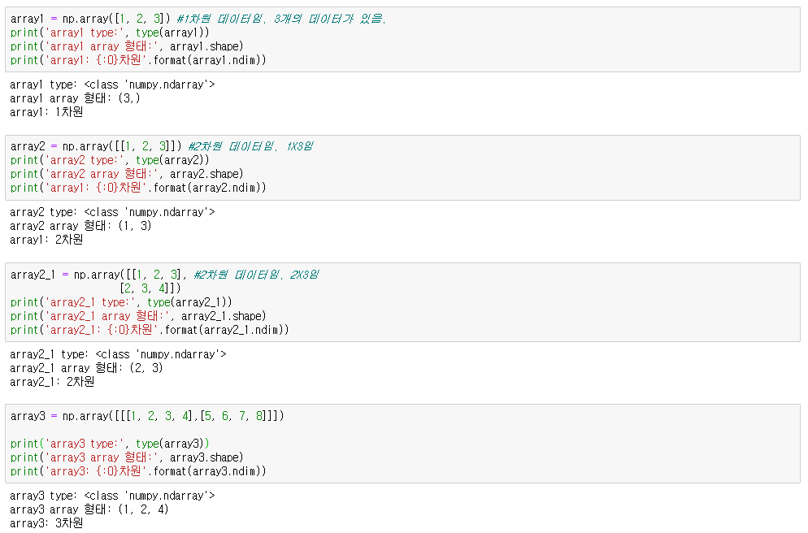
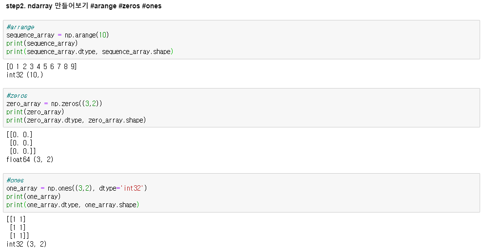
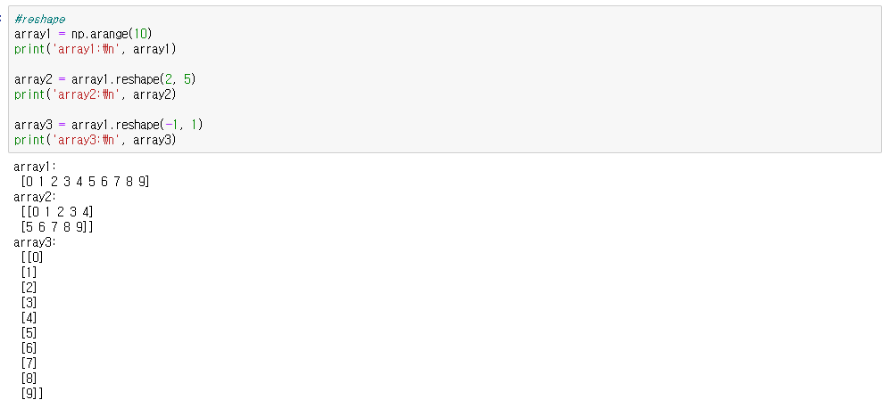

<!DOCTYPE html>
<html lang="en">

<head>
    <meta charset="UTF-8">
    <meta name="viewport" content="width=device-width, initial-scale=1.0">
    <meta http-equiv="X-UA-Compatible" content="ie=edge">
    <title>인공지능 practice</title>

    <link rel="stylesheet" href="https://cdnjs.cloudflare.com/ajax/libs/meyer-reset/2.0/reset.css">
    <link rel="stylesheet" href="../../design-control/css/tamplet.css">

    <style>
        .first_title>li {
            font-size: 14px;
        }

        .second_title>li {
            font-size: 12px;
            text-indent: 5px;
            font-weight: bold;
        }

        .third_title>li {
            font-size: 10px;
            text-indent: 10px;
        }

        .fourth_title>li {
            font-size: 8px;
            text-indent: 15px;
        }

        .fifth {
            font-size: 8px;
            margin-left: 20px;
        }

        
        .extra_small{
            margin: 0;
            width: 100px;
        }

        .small{
            margin: 0;
            width: 200px;
        }

        .medium{
            margin: 0;
            width: 400px;
        }

        .large{
            margin: 0;
            width: 600px;
        }
        .huge{
            margin:0;
            width: 800px;
        }
        .extra_huge{
            margin: 0;
            width: 1000px;
        }
    </style>

<script src="https://ajax.googleapis.com/ajax/libs/jquery/3.4.1/jquery.min.js"></script>
<script>
    $(document).ready(function () {
        $("#button-nav").click(function () {
            $("#nav").toggle();
        });
    });
</script>
</head>

<body>
</body>

</html>

<!DOCTYPE html>
<html>

<head>
    <meta charset="utf-8">
    <title></title>
</head>

<body>
    <div class="container">
        <header>
            <h1>인공지능</h1>
        </header>
        <section class="content">
            <nav>
                <button id="button-nav" style="position: fixed;">차례</button>
                <br><br><br><br><br><br>
                <div id="nav" style="position: fixed; width: 300px;">
                    <ul class="first_title">
                        <li>Ⅰ. numpy = ndarray(행렬) 가지고 놀기</li>
                        <ul class="second_title">
                            <li>step1. ndarray 기본 #ndarray가 뭔데?</li>
                            <li>step2. ndarray 만들어보기 #arange #zeros #ones</li>
                            <li>step3. 만든 ndarray를 주물럭 #reshape() #sort() #argsort()</li>
                            <li>step4. 완성된 ndarray에서 필요한 것 뽑아내기 #indexing</li>
                            <li>*numpy의 여러 함수들</li>
                        </ul>
                        <br>
                        <li class="first_title">Ⅱ. pandas</li>
                        <ul class="second_title">
                            <li></li>
                            <li>*pandas의 여러 함수들</li>
                        </ul>
    
    
                    </ul>
                </div>

            </nav>
            <main>
                <h1>인공지능 기술 구성도</h1>
                <p>
                    데이터 처리<br>
                    numpy : 파이썬의 행렬, 선형대수 패키지이다. 선형대수 기반의 프로그램을 쉽게 만들 수 있도록 지원한다. 주요 객체는 ndarray이며, 배열기반의 연산이 핵심이다.<br>
                    pandas : 파이썬의 데이터 핸들링(데이터 처리) 패키지. 2차원 데이터 처리에 특화되어 있다. 판다스의 많은 부분이 넘파이 기반으로 작성되었다. 핵심 객체는 DataFrame이다.<br>
                    <br>
                    scikit-learn : 파이썬 머신러닝 라이브러리. numpy기반으로 작성되어 있음<br>
                    <br>
                    matplotlib : 파이썬의 시각화 패키지.<br>
                    seaborn : matplotlib의 단점을 보완해 나온 시각과 패키지.

                    tensorflow : 구글의 딥러닝 프레임워크<br>
                    <br>
                    kaggle : 데이터 저장소인가?


                </p>
                
                <div style="background-color: #f2f2f2;">
                    <h1>Ⅰ. numpy = ndarray(행렬) 가지고 놀기</h1>
                    <p>
                        C/C++과 같은 저수준 언어 기반의 호환 API를 제공한다. 
                        기존 C/C++ 기반의 타프로그램과 데이터를 주고받거나 API를 호출해 쉽게 통합할 수 있는 기능을 제공한다.
                        수행성능이 중요한 부분은 C/C++기반의 코드로 작성하고, 이를 넘파이에서 호출하는 방식으로 쉽게 통합하는 것이 가능하다.<br>
                    </p>
                    <p>
                        axis0 : 행 방향 축<br>
                        axis1 : 열 방향 축
                    </p>
    
    
                    <h2>step1. ndarray 기본 #ndarray가 뭔데? </h2>
                    <p>
                        numpy의 주인공, 핵심 재료는 ndarray(행렬)이다.<br>
                        차원과 크기를 자유자재로 다룰 줄 알아햐 한다.<br>
                        차원은 처음 나타난 <strong>[ 의 갯수</strong>, <strong>튜플의 요소의 갯수</strong>와 같다.
                    </p>
                    <p>
                        
                    </p>
    
    
                    <p>
                        np.array() : 리스트와 같은 다양한 인자를 받아서 ndarray로 변환하는 기능을 수행<br>
                        type(x) : x의 타입을 알려준다.<br>
                        x.ndim : 몇 차원인지 알려준다.<br>
                        x.shape : x의 차원과 크기를 튜플 형태로 알려준다.<br>
                    </p>
    
                    <h3>ndarray 데이터 타입</h3>
                    <h4>(1) ndarray 데이터 타입</h4>
                    <h5>숫자</h5>
                    <p>
                        int형(8, 16, 32bit)<br>
                        unsigned int형(8, 16, 32bit)<br>
                        float형(16, 32, 64, 128bit)<br>
                        complex형(?)<br>
                    </p>                  
                    <h5>문자열</h5>
                    <h5>불</h5>
                    <p>
                        x.dtype()을 이용하면 x의 데이터 타입을 알 수 있다.
                    </p>
    
                    <h4>(2) 데이터 타입이 다르다면 -> 큰 것으로 통일</h4>
                    <p>
                        하나의 ndarray내에는 서로 같은 데이터 타입만 가능하다.<br>
                        서로 다른 데이터 유형이 섞여 있는 리스트를 ndarray로 변환하면
                        데이터 크기가 더 큰 타입으로 형 변환을 한다.<br>
                        ex) int형과 float형이 섞여있으면 전부 float으로 바꾼다.
                    <p>
    
                    <h4>(3) 데이터 타입 강제 변경 for 메모리 절약</h4>
                    <p>
                        x.astype() 을 이용해서 강제로 형 변환을 하면 메모리를 아낄 수 있다.
                    </p>
    
                    <h2>step2. ndarray 만들어보기 #arange #zeros #ones</h2>
                    <p>
                        arange() : array를 파이썬의 표준함수인 range()로 표현한 것으로 보면 된다.<br>
                        <br>
                        zeros() : 값을 0으로 행렬 만들기<br>
                        ones() : 값을 1로 행렬 만들기<br>
                        zeros()와 ones()에 튜플 형태로 shape값을 정해주면 된다.<br>
                        데이터 타입의 기본값은 float64형이나, 강제로 바꿔줄 수 있다.
                        
                        
                    </p>
    
                    <h2>step3. 만든 ndarray를 주물럭 주물럭 #reshape() #sort() #argsort() #x.dot() #x.transpose()</h2>
                    <p>
                        reshape() : 내가 행과 열을 지정해주면 그 형태로 행렬을 바꾸라는 의미임.
                        데이터 수 = 행의 갯수 X 열의 갯수 가 안되면 에러남.
                        그래서 -1을 인자로 주면 내가 행 또는 열 중 하나를 값으로 알려주면, 컴퓨터 너가 나머지 하나는 나눠서 계산하라는 명령이다.<br>
                        reshape(-1, 1)같은 형태는 자주 사용된다. 어떤 행렬이든 2차원으로 바꿔주고, m행 X 1열로 만들어준다. 벡터가 나온다.
                        
                    </p>
                    
    
                    <h2>step4. 완성된 ndarray에서 필요한 것 뽑아내기 #indexing</h2>
    
    
                    <h2>*numpy의 ndarray 관련 여러 함수들</h2>
                    <p>
                        np.array() : 리스트와 같은 다양한 인자를 받아서 ndarray로 변환하는 기능을 수행<br>
                        type(x) : x의 타입을 알려준다.<br>
                        x.ndim : 몇 차원인지 알려준다.<br>
                        x.shape : x의 차원과 크기를 튜플 형태로 알려준다.<br>
                        <br>
                        x.dtype() : x의 데이터 타입을 알려준다.<br>
                        x.astype() : x를 강제로 형 변환한다.<br>
                        <br>
                        np.arange()<br>
                        np.zeros(), np.ones()<br>
                        np.zeros() : 요소가 0인 행렬을 만듦.<br>
                        np.ones() : 요소가 1인 행렬을 만듦.<br>
                        reshape() : 행렬의 형태 바꿔주기<br>
                        <br>
                        tolist() : 리스트 자료형으로 출려해주기<br>
                    </p>
                    <p>
                        행렬의 형태를 바꾸나봐. 바꾸어야만 하는 상황이 있나봐.
                    </p>
                    <h2>INDEXING</h2>
                    <h3>indexing, slicing, fancy indexing, boolean indexing</h3>
                    <p>
    
                    </p>
    
                    <h3>행렬의 정렬 - sort(), argsort()</h3>
                </div>

                <hr>

                <h1>Ⅱ. pandas</h1>
                <p>
                    판다스의 핵심객체는 <strong>Series</strong>, <strong>DataFrame</strong>이다.<br>
                    Series는 column이 1개이고, DataFrame은 column이 여러개인 데이터 구조체이다.
                    Series는 Index와 한 개의 열로 구성된 데이터 세트이다.<br>
                    그래서 DataFrame은 여러 개의 Series로 이루어졌다고 할 수 있다.<br>
                    그리고 둘다 개별 데이터를 고유하게 식별하는 key값인 <strong>Index</strong>를 객체로 가지고 있다. Index는 RDBMS의 PK와 비슷하다.
                    모든 DataFrame 내의 데이터는 생성되는 순간 고유의 Index 값을 가지게 된다.
                     Index는 단순히 순차 값과 같은 의미 없는 식별자만 할당하는 것이 아니고 고유성이 보장된다면 의미있는 데이터값 할당도 가능하다. 또한 인덱스는 문자열도 가능하다.
                </p>
                <h2>*pandas의 여러 함수들</h2>
                <p>
                    import pandas as pd : 판다스 모듈 가져오기<br>
                    x = pd.read_csv('abc.csv') : abc.csv파일을 불러오기<br>
                    type(x) : x의 타입을 알려준다.<br>
                    x.head(n) : 앞에서부터 n개의 데이터까지만 보여준다. 기본값은 5개이다.<br>
                    x.shape() : x의 행X열을 튜플 형태로 알려준다.<br>
                    x.info() : 데이터 갯수, 데이터 타입, Null 갯수를 알 수 있다. 데이터 타입이 object인 것은 문자열인 것이다.<br>
                    x.describe() : count = Not Null인 데이터 갯수, mean = 데이터 평균값, std = 표준편차, min = 최솟값, max = 최댓값을 알려준다.
                    x['column_name'].함수식 : column_name 열의 데이터만 가져온다. 해당 열에 해당하는 Series 객체를 반환하는 것이다.<br>
                    x.value_counts() : 해당 열의 유형과 각각의 갯수를 알려준다. 많은 것부터 보여준다.
                     얘는 Series객체만 가지고 할 수 있다(즉, x가 Series객체이어야 한다). 
                    또한 출력하는 것도 Series객체이다. 데이터의 분포도를 확인하는데 유용하다.

                </p>
            </main>

        </section>
        <footer>
            참조 : 파이썬 머신러닝 완벽 가이드(권철민)
        </footer>
    </div>
</body>

</html>